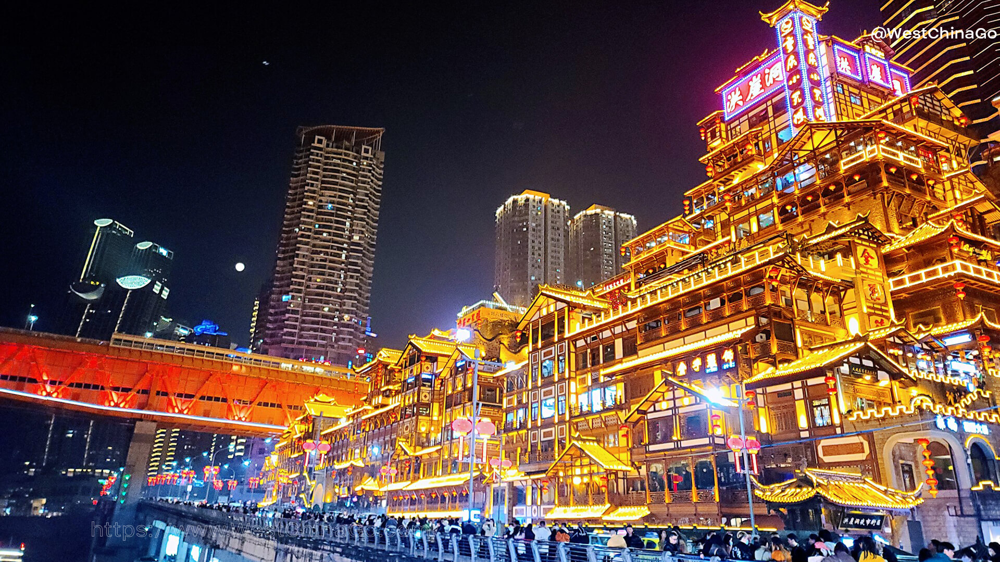
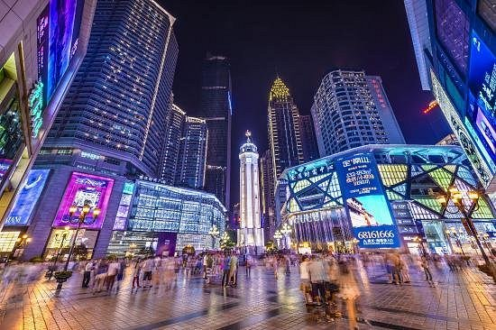
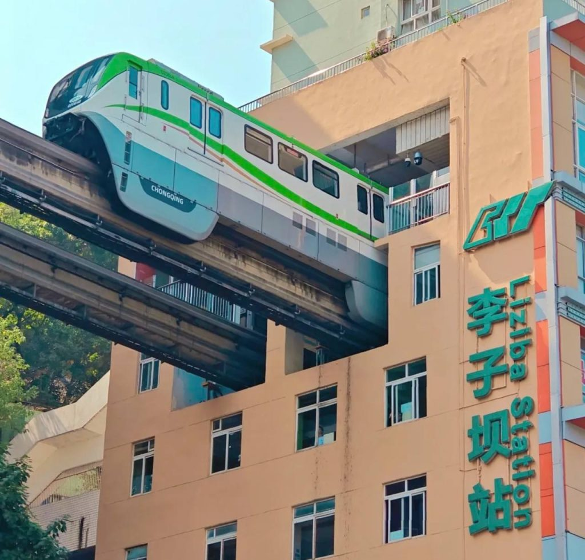
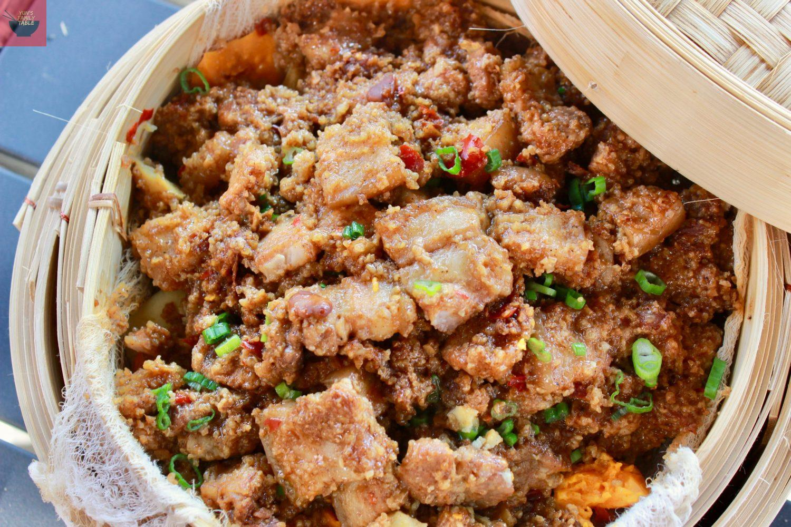

Discover Chongqing
Chongqing, known as the "Mountain City" or "Fog City," is one of China's four direct-controlled municipalities. Built on steep hills and cliffs overlooking the confluence of the Yangtze and Jialing Rivers, Chongqing features a unique 3D urban landscape with buildings stacked on mountains, skyscrapers, and vibrant nightlife. It's famous for its fiery hotpot, stunning night views, and rich historical heritage.
Suggested Visit Time
Recommended Duration: 1-2 days
Best Time to Visit: March to May (spring) and September to November (autumn) when the weather is mild and less foggy.

Hongyadong
Hongyadong is Chongqing's most iconic landmark, a stunning complex of traditional stilt houses built into the cliffside along the Jialing River. This unique architectural wonder features 11 floors stacked vertically, creating a breathtaking sight that resembles something out of a fantasy movie.
At night, Hongyadong is illuminated with thousands of golden lights, casting a magical reflection on the river. The complex houses restaurants, shops, bars, and observation decks offering panoramic views of the city's skyline. It's often compared to the settings in Hayao Miyazaki's Spirited Away for its otherworldly beauty.

Jiefangbei
Jiefangbei, or the Liberation Monument, is the iconic heart of Chongqing's commercial center. This 27-meter-tall tower stands at the intersection of the city's busiest streets, surrounded by towering skyscrapers, luxury shopping malls, and vibrant nightlife.
As one of China's most famous pedestrian zones, Jiefangbei is the perfect place to experience modern Chongqing. Visitors can explore high-end boutiques, taste local snacks in the bustling underground malls, and enjoy the dazzling neon lights that illuminate the area at night. It's the ultimate destination for shopping, dining, and people-watching in Chongqing.

Liziba
Liziba is one of Chongqing's most famous and unique tourist spot, where a light rail train passes directly through a building! This incredible engineering marvel has become a viral sensation and must-visit attraction in the city, showcasing Chongqing's unique 3D urban architecture that makes this mountain city so special.
The train that runs through the middle of a multi-story building. Visitors can watch the train enter and exit the building from a specially designed observation deck, capturing stunning photographs and experiencing Chongqing's famous architecture. The area surrounding Liziba station is also a vibrant shopping and dining district, making it a perfect place to experience modern Chongqing.

Chongqing People's Great Hall
The Chongqing People's Great Hall is a magnificent architectural masterpiece and one of the city's most iconic landmarks. Built in 1954, this stunning building combines traditional Chinese palace architecture with modern design, featuring a grand dome, golden roof tiles, and symmetrical layout that resembles the Forbidden City.
The Great Hall is a symbol of Chongqing's historical significance and architectural excellence. Visitors can admire its beautiful exterior, explore the spacious halls, and enjoy panoramic views from the surrounding plaza. The building is particularly breathtaking at night when illuminated with golden lights, creating a majestic and unforgettable sight.

Eling Park
Eling Park is Chongqing's oldest and most famous urban park, built in 1909 during the Qing Dynasty. Located on a hilltop in the center of the city, the park offers some of the best panoramic views of Chongqing's stunning skyline and the convergence of the Yangtze and Jialing Rivers.
The park features beautiful traditional Chinese gardens, ancient pavilions, stone carvings, and lush greenery. The iconic Tower of Looking at Victory offers 360-degree views of the entire city. At night, the park offers breathtaking views of Chongqing's famous "thousand-mile city lights" skyline.
Local Food
Chongqing is world-famous for its bold, spicy cuisine, with hotpot being the city's culinary crown jewel. The city's food culture is characterized by its liberal use of chili peppers and Sichuan peppercorns, creating the signature "numbing-spicy" flavor.

Chongqing Hotpot
Chongqing's most iconic dish, hotpot features a bubbling pot of intensely spicy, numbing broth made with chili peppers, Sichuan peppercorns, and various spices. Diners cook raw meats, vegetables, and tofu in the flavorful broth. The experience is social, interactive, and unforgettable.

Chongqing Spicy Noodles
Also known as "Xiaomian," these are Chongqing's famous street food noodles. The chewy wheat noodles are tossed in a complex sauce made with chili oil, Sichuan peppercorns, vinegar, sesame paste, and various spices. It's simple yet incredibly flavorful and aromatic.
Sichuan Boiled Fish
A classic Chongqing dish, Sichuan Boiled Fish features tender fish fillets poached in a fiery broth of chili oil, dried chilies, and Sichuan peppercorns. The fish is incredibly tender and flavorful, while the broth provides an intense numbing-spicy sensation that's characteristic of Chongqing cuisine.

Fen Zheng Rou
Steamed Pork with Rice Flour is a beloved Chongqing dish featuring tender pork slices coated in spiced rice flour and steamed until melt-in-your-mouth tender. The dish is often layered with sweet potatoes or pumpkin, creating a perfect balance of savory and sweet flavors.